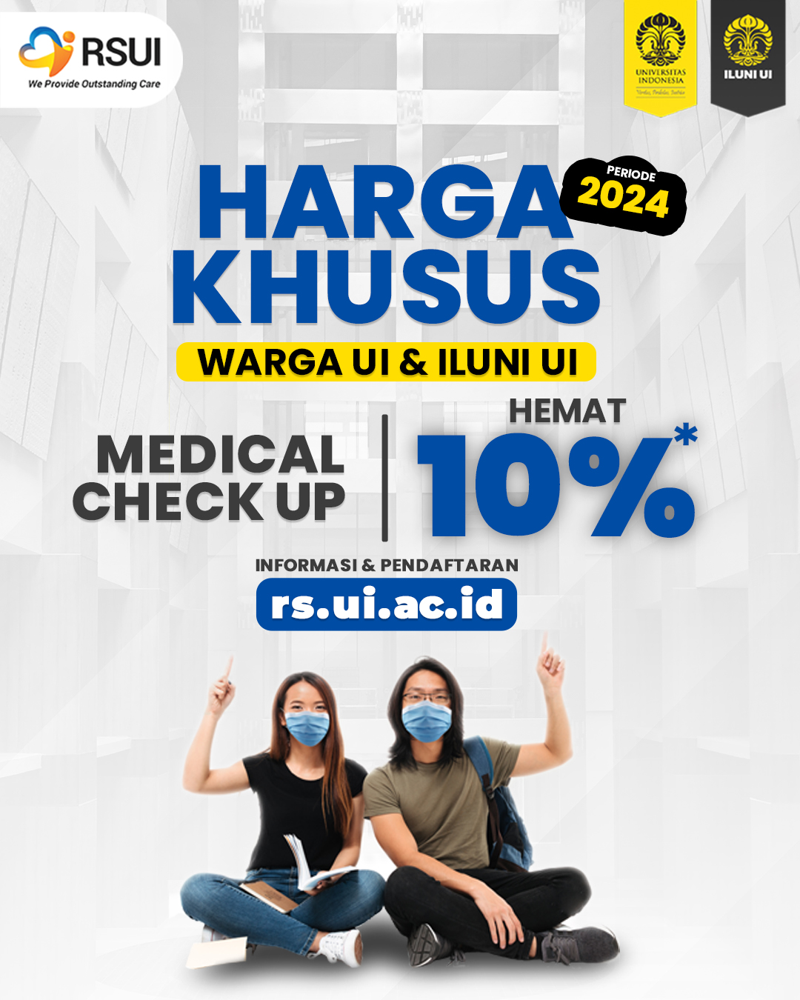
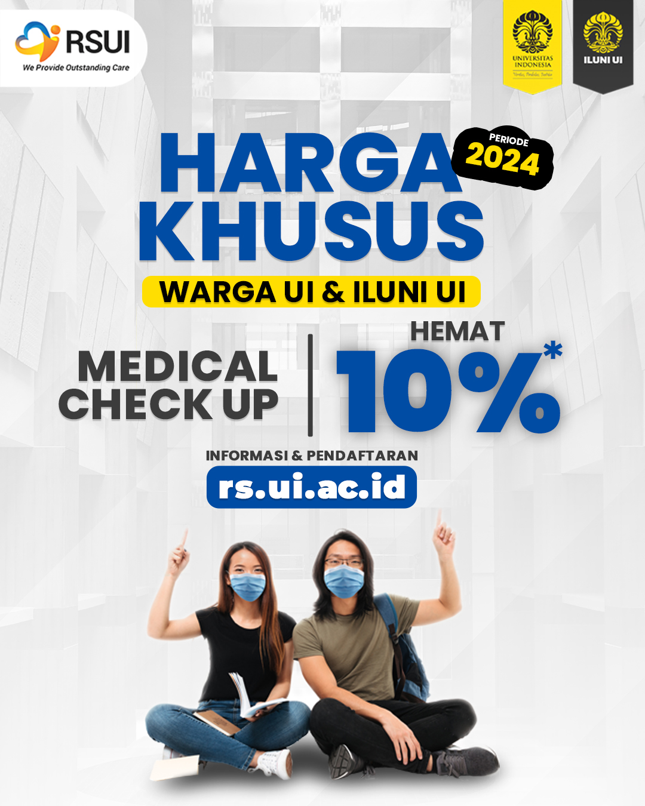

Rumah Sakit Berbasis Digital
Menerapkan sistem manajemen operasional berbasis teknologi informasi jaringan
Temukan dan verifikasi profil dokter serta tenaga ahli kami
Menerapkan sistem manajemen operasional berbasis teknologi informasi jaringan
Kesinambungan pelayanan yang dilakukan mulai dari perawatan sampai pasien pulang ke rumah oleh tim home care multi-profesi
Seluruh klien dikaji berdasarkan riwayat penyakit dahulu, keluarga, dan pola hidup
Mengembangkan kolaborasi interprofesional dalam pelayanan, riset bidang kesehatan, serta pengabdian masyarakat
 



Deskripsi fasilitas rumah sakit modern dengan berbagai layanan medis unggulan.

Testimoni dari pasien 1 tentang pelayanan yang memuaskan di RSUI.

Testimoni dari pasien 2 tentang perawatan medis berkualitas tinggi.
Pendaftaran poliklinik dan vaksin